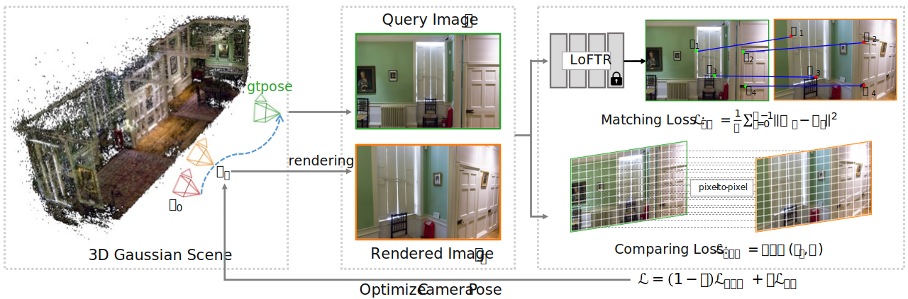

Pipeline

Given an initial camera pose, iComMa iteratively optimizes to estimate the ground truth pose associated with the query image. For the t-th optimization step, we first render the image corresponding to the camera pose 𝑇𝑡 using 3D Gaussian Splatting. Subsequently, we compute the residuals between the rendered image and the query image, which include the matching loss 𝓛𝑀𝑎 obtained from the end-to-end matching module and the per-pixel comparing loss 𝓛𝐶𝑜𝑚. The entire framework is differentiable, enabling the optimization of camera poses by utilizing the gradients derived from minimizing the residuals.
Experimental Results on Synthetic Datasets
Experimental Results on Front-facing LLFF Datasets
Experimental Results on 360° Scene Datasets
Note: iNeRF† is a variant of iNeRF, achieved by inverting Mip-NeRF360.
Ablation Study